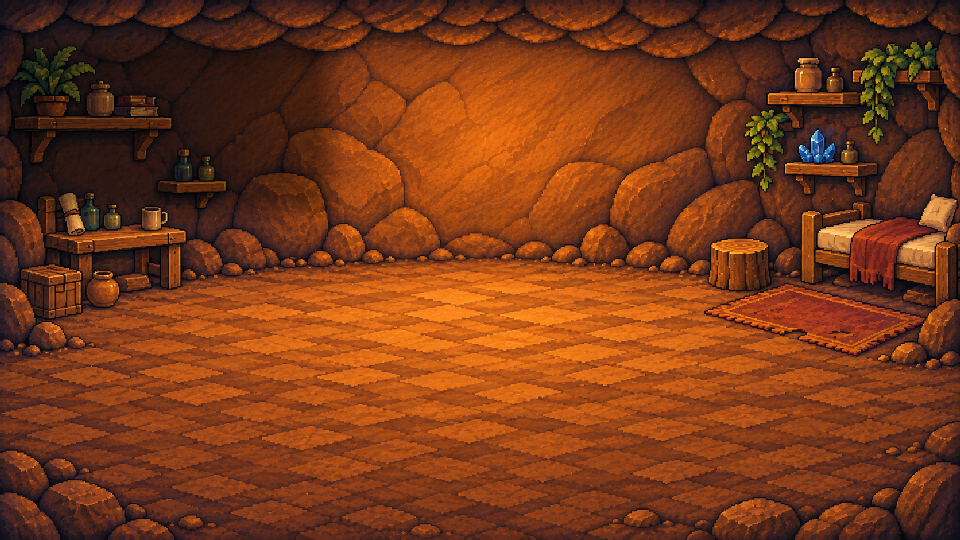
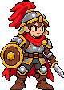
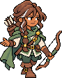
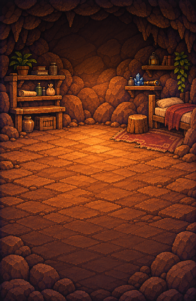
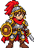
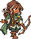

Home 秘密基地
Phase 1 · 待視覺審核
審核預覽
安全區
灰階
warrior
mage
ranger
桌機 · 960 × 540



最近冒險
Mimiku · 回來啦。先在火邊坐一會兒。
導覽列
Home · 秘密基地
Landing · 風格基準
手機 · 390 × 600



最近冒險
Mimiku · 回來啦。先在火邊坐一會兒。
導覽列
Home · 秘密基地
Landing · 風格基準